Email1: henryhuzy@gmail.com (preferred)
Email2: zyhu22@cse.cuhk.edu.hk
Address: Department of Computer Science and Engineering,
The Chinese University of Hong Kong (CUHK CSE)
Hi, welcome to my personal website!
I am a final-year Ph.D. student at CUHK CSE, advised by Prof. Liwei Wang (Assistant Prof.) and Prof. Michael R. Lyu (Prof., IEEE Fellow, AAAS Fellow, ACM Fellow, HKAES Fellow). I also work closely with Prof. Yiwu Zhong (Assistant Prof.) from Peking University and Prof. Yin Li (Associate Prof.) from University of Wisconsin-Madison. Before joining CUHK, I received my B.E. degree from Sun Yat-sen University in 2022, advised by Prof. Chang-Dong Wang (Prof.) and Prof. Xiaodan Liang (Associate Prof.).


{kind=link}
📣 I expect to graduate in Spring 2027 and am actively seeking industry opportunities in Multimodal AI. Please feel free to reach out if you are hiring!
📖 Research Interests
My research focuses on efficient and effective Multimodal Large Language Models (MLLMs), with particular interests in multimodal understanding and reasoning, efficient training and inference, and model evaluation and benchmarking.📚 Selected Publications
(* denotes equal contribution.)Efficient and Effective MLLMs
- VideoLatent: Video-Language Learning via Latent Self-Forcing
Zi-Yuan Hu, Zicong Tang, Shijia Huang, Yanyang Li, Michael R. Lyu, Liwei Wang- Preprint 2026 (Under Review)
- [paper][project]
- TL;DR: We introduce VideoLatent, a novel MLLM that learns visual latent reasoning through a latent injection module and a new latent self-forcing training paradigm. Extensive experiments across 14 benchmarks covering general video understanding and complex video reasoning show that VideoLatent consistently outperforms existing standard and latent MLLMs, while reducing training/inference overhead by ~6x/~68x compared with Video-R1.
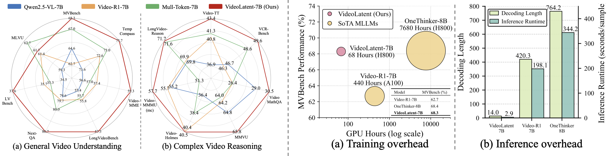
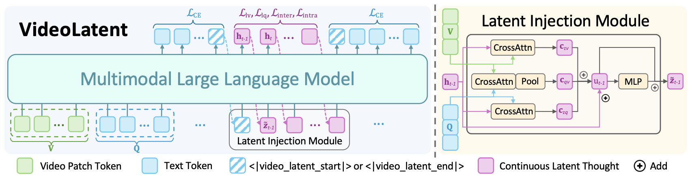
- SinkPruner: Sink-Free Visual Token Pruning for Multimodal Large Language Models
Shiyu Li*, Zi-Yuan Hu*, Shijia Huang, Yanyang Li, Yiwu Zhong, Liwei Wang- Preprint 2026 (Under Review)
- [paper]
- TL;DR: We identify high-norm outlier visual tokens as redundant attention sinks and propose SinkPruner, a training-free visual token pruning framework with a visual sanitizer and a text-guided pruner. Extensive experiments conducted on both image-language and video-language benchmarks demonstrate the strong efficiency and generalization of SinkPruner, preserving 96.5%/91.8% of the original performance under 89% token reduction on LLaVA-1.5/Qwen2.5-VL.
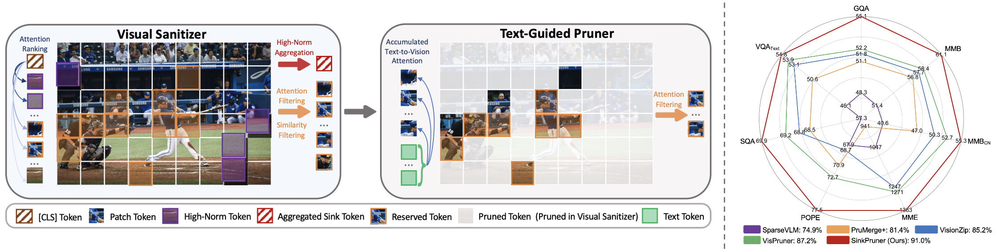
- Rethinking Chain-of-Thought Reasoning for Videos
Yiwu Zhong, Zi-Yuan Hu, Yin Li, Liwei Wang- Preprint 2025 (Under Review)
- [paper][code]
- TL;DR: We revisit the role of CoT reasoning in video MLLMs and challenge the assumption that effective video reasoning requires long, human-like CoT traces. We introduce an efficient post-training and inference framework with concise reasoning and visual token compression, eliminating CoT annotations and SFT. Experiments conducted on general video, long video, and complex video benchmarks demonstrate that our framework achieves substantially improved inference efficiency and delivers competitive performance.
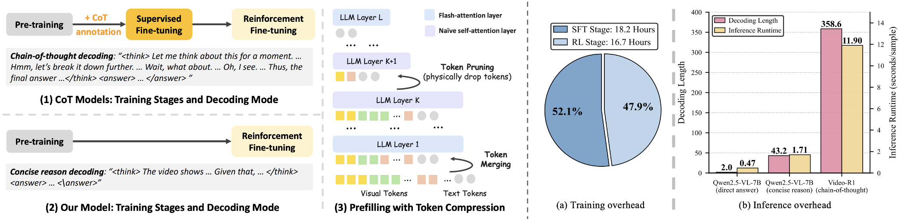
- Enhancing Temporal Modeling of Video LLMs via Time Gating
Zi-Yuan Hu, Yiwu Zhong, Shijia Huang, Michael R. Lyu, Liwei Wang- EMNLP 2024 Findings
- [paper][code]
- TL;DR: We propose TG-Vid, a VideoLLM with a Time Gating module that employs a time gating mechanism to spatial attention, temporal attention, and MLP. TG-Vid significantly outperforms SOTA VideoLLMs on temporal-sensitive benchmarks, surpassing ST-LLM by +1.5 on MVBench, +2.1 on TempCompass, +3.2 on NExT-QA ATP-hard, and +3.2 on NExT-QA Val.
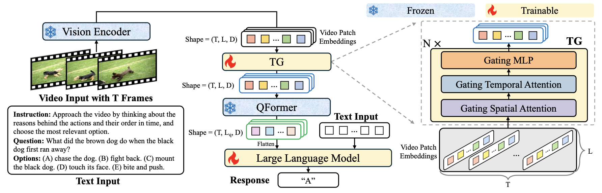
- Beyond Embeddings: The Promise of Visual Table in Visual Reasoning
Yiwu Zhong*, Zi-Yuan Hu*, Michael R. Lyu, Liwei Wang- EMNLP 2024 (Student First Author)
- [paper][code]
- TL;DR: We introduce Visual Table, a novel form of visual representation tailored for visual reasoning. Visual tables are constructed as hierarchical descriptions of visual scenes, featuring a scene description and multiple object-centric descriptions covering categories, attributes, and knowledge. Extensive results on 11 visual reasoning benchmarks demonstrate that the generated visual tables significantly outperform previous structural and text-based representations.
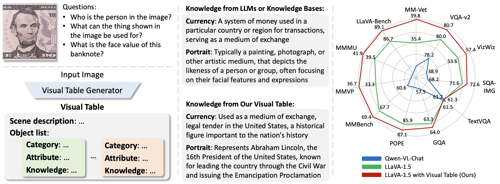
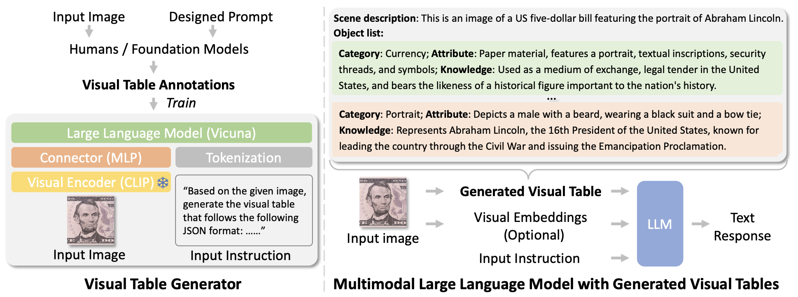
- VL-PET: Vision-and-Language Parameter-Efficient Tuning via Granularity Control
Zi-Yuan Hu, Yanyang Li, Michael R. Lyu, Liwei Wang- ICCV 2023
- [paper][code][project][poster]
- TL;DR: We propose VL-PET, a novel parameter-efficient fine-tuning framework tailored to vision-and-language tasks through a granularity-controlled mechanism. Experiments on both image-language and video-language tasks demonstrate the efficiency and effectiveness of VL-PET, which outperforms Adapter- and LoRA-based methods by up to 3.41% and 7.03%, respectively.
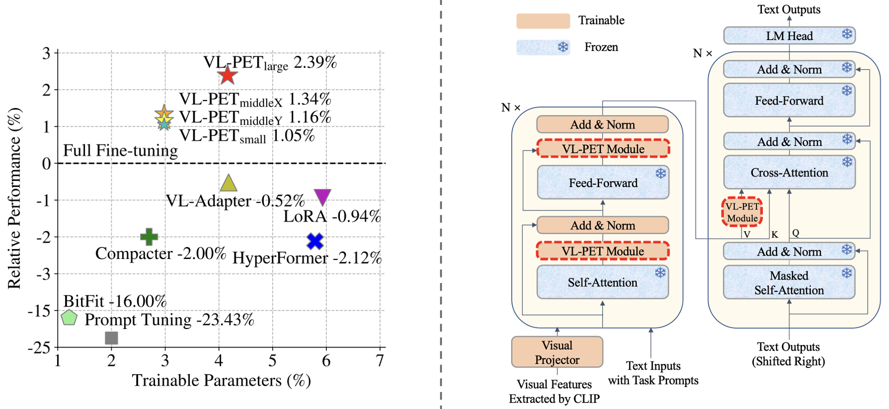
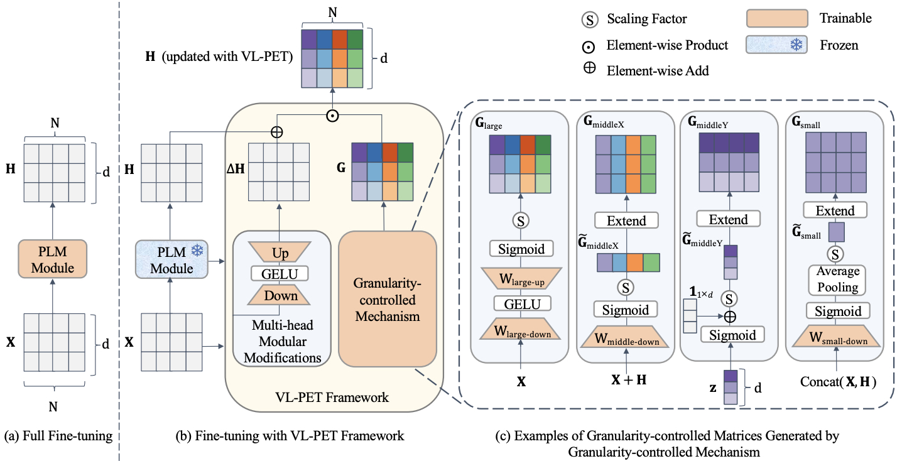
Model Evaluation and Benchmarking
- NeMo: Needle in a Montage for Video-Language Understanding
Zi-Yuan Hu*, Shuo Liang*, Duo Zheng, Yanyang Li, Yeyao Tao, Shijia Huang, Wei Feng, Jia Qin, Jianguang Yu, Jing Huang, Meng Fang, Yin Li, Liwei Wang- Preprint 2025 (Submitted to IJCV, Under Review)
- [paper][project]
- TL;DR: Inspired by the needle in a haystack test widely used by LLMs, we introduce Needle in a Montage (NeMo), a novel task for assessing VideoLLMs' retrieval-based long-context recall and temporal grounding. We build NeMoBench with a scalable automated data generation pipeline, covering 31,378 QA pairs from 13,486 videos. Comprehensive evaluations are conducted on 20 SOTA models, providing extensive results and key insights into their capabilities and limitations. We are glad that NeMo is cited by VSI-Super.
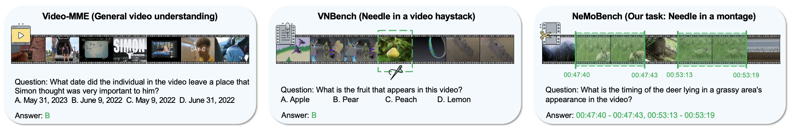
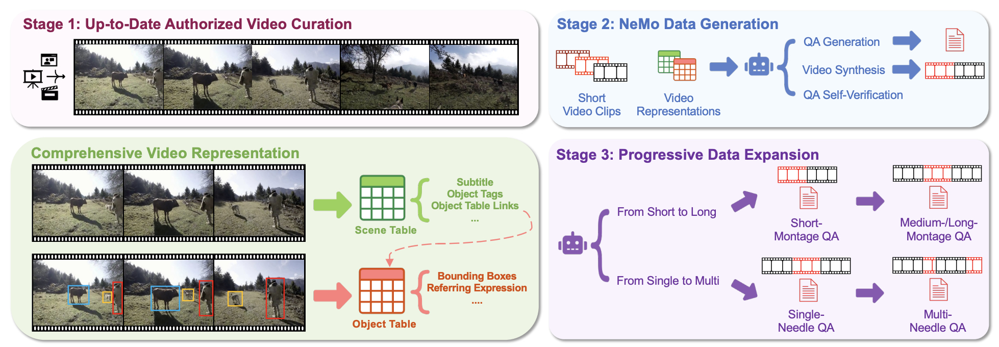
- Fine-grained Spatiotemporal Grounding on Egocentric Videos
Shuo Liang, Yiwu Zhong, Zi-Yuan Hu, Yeyao Tao, Liwei Wang- ICCV 2025
- [paper][code]
- TL;DR: We introduce EgoMask, the first pixel-level benchmark for fine-grained spatiotemporal grounding in egocentric videos, together with an automatic annotation pipeline and a large-scale training set spanning short-, medium-, and long-term videos. Experiments show that existing SOTA grounding models struggle on EgoMask, while fine-tuning on EgoMask-Train brings a 41.30% average relative improvement.
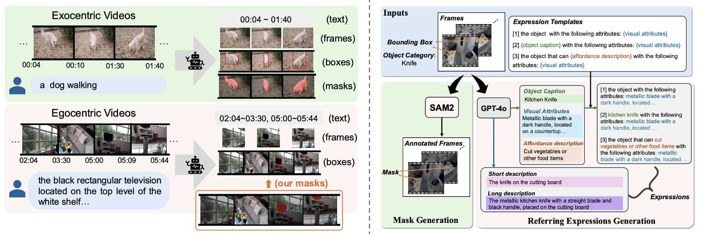
- CLEVA: Chinese Language Models EVAluation Platform
Yanyang Li, Jianqiao Zhao, Duo Zheng, Zi-Yuan Hu, Zhi Chen, Xiaohui Su, Yongfeng Huang, Shijia Huang, Dahua Lin, Michael R. Lyu, Liwei Wang- EMNLP 2023 Demo
- [paper][code]
- TL;DR: We present an end-to-end Chinese LLM evaluation platform with standardized prompting, contamination-aware data design, and large-scale evaluation across 23 Chinese LLMs. Notably, CLEVA has been integrated into Stanford HELM.
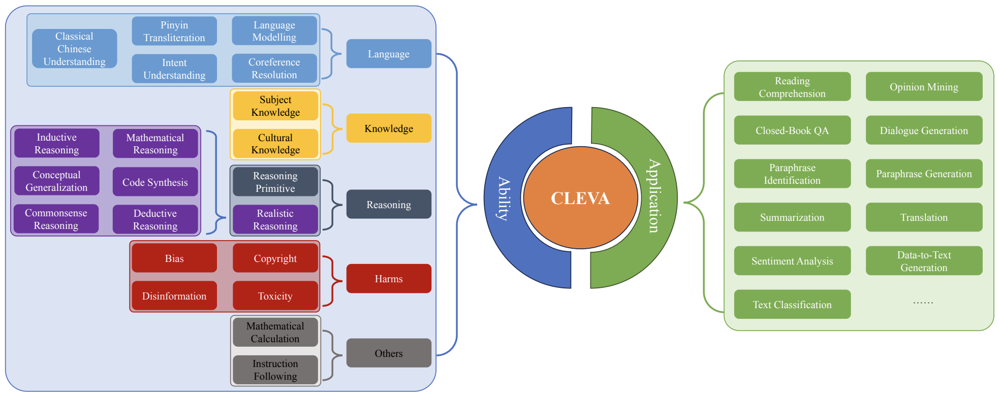
🧑💻 Research Experience
- Research Intern, Weitu AI
- November 2025 - June 2026
- Focused on effective video latent reasoning (i.e., VideoLatent), efficient inference for MLLMs (i.e., SinkPruner), and effective and concise chain-of-thought reasoning for MLLMs (i.e., RethinkingCoTVideo).
- University-Industry Collaborative Research Project, CUHK x Phoenix TV
- November 2024 - July 2025
- Focused on cost-effective and scalable MLLM benchmark construction (i.e., NeMo).
- Research Intern, Shanghai Artificial Intelligence Laboratory
- July 2023 - May 2024
- Focused on enhancing video temporal modeling for MLLMs (i.e., TG-Vid), and effective multimodal representations for visual reasoning (i.e., Visual Table).
- Research Intern, Shanghai Artificial Intelligence Laboratory
🎓 Education Background
- The Chinese University of Hong Kong
- August 2022 - March 2027 (expected)
- Ph.D. in Computer Science and Engineering
- Sun Yat-sen University
- September 2018 - June 2022
- B.Eng. in Software Engineering
🏆 Selected Awards
- Postgraduate Scholarship (23k HK$ per year), CUHK, 2022 - Present
- 1st place, Language and Intelligence Challenge, CCF & CIPS, 2022
- Outstanding Graduate Thesis, SYSU, 2022
- Academic Innovation Scholarship (Top 2%), SYSU, 2021
- Academic Competition Scholarship (Top 2%), SYSU, 2021
- National Scholarship (Top 2%) x 2, Ministry of Education of China, 2019 & 2020
- The First Prize Scholarship (Top 5%) x 2, SYSU, 2019 & 2020
🏫 Academic Services
- Conference Reviewer: CVPR, ICCV, ACL, EMNLP, ACM MM
- Journal Reviewer: IJCV, PR
- Organizer: Multi-Modal Symposium
👨🏫 Teaching Services
- TA at CSCI 5640 Natural Language Processing, CUHK, 2025
- TA at CSCI 3320 Fundamentals of Machine Learning, CUHK, 2023 & 2024
- TA at AIST 1000 Introduction to Artificial Intelligence and Machine Learning, CUHK, 2023 & 2024